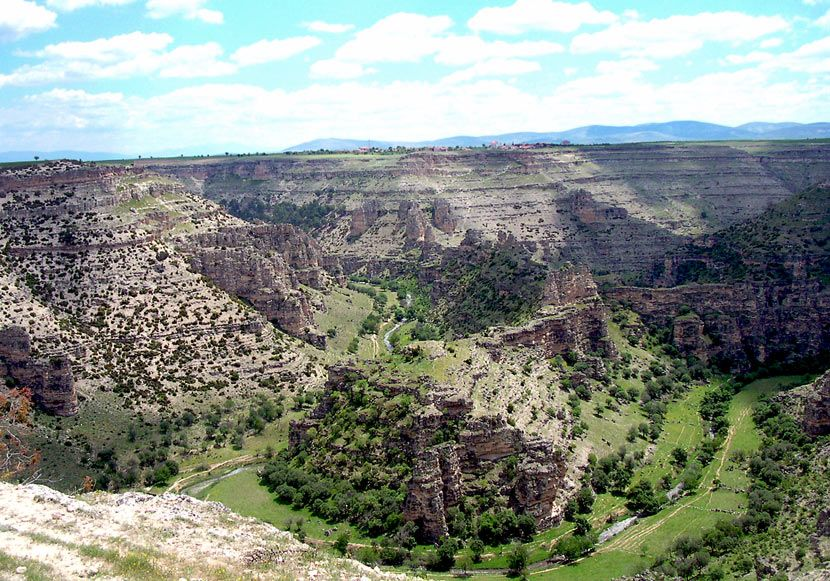

Aşıklar Diyarı Uşak

Uşak Ulubey Kanyonu
Some representative placeholder content for the first slide.
Uşak Taşyaran Vadisi
Some representative placeholder content for the second slide.

Uşak Antik Clandıras Köprüsü
Some representative placeholder content for the third slide.
Uşak Atatürk'ün Evi
Some representative placeholder content for the third slide.

Uşak Blandus Antik Kenti
Some representative placeholder content for the third slide.
Uşak Seebaste Antik Kenti
Some representative placeholder content for the third slide.